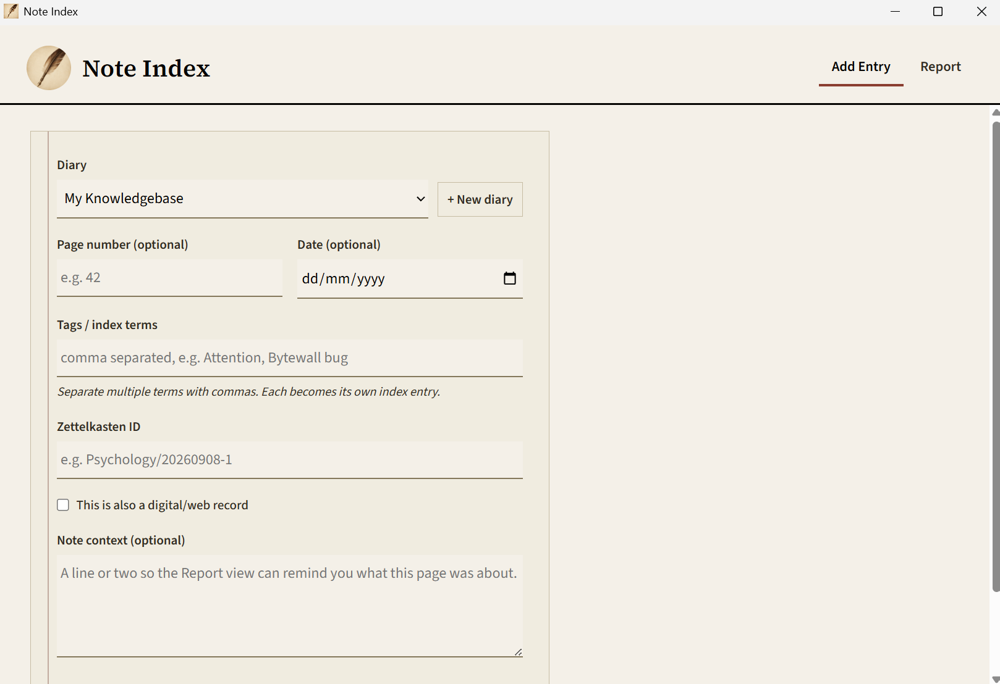
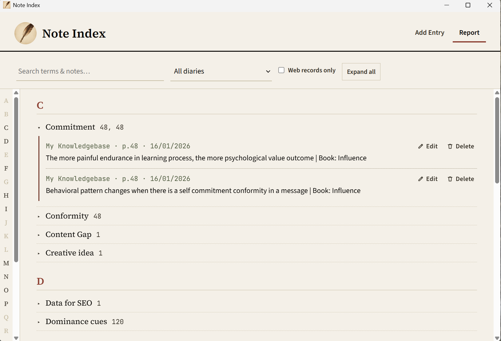

A book-style index for physical notes — built for people who write on paper before they write anywhere else.
loading…Finding the latest release…
macOS isn't supported yet — Note Index currently ships for Windows and Linux only.
Add Entry — diary, page, tags, Zettelkasten ID

Report — the book-style index, A–Z
I write physical notes first — page numbers and tags noted by hand on every entry — and keep a separate digital library for anything software-related. The problem was never the writing. It was finding it again.
I tried keeping the index in Notion. It didn't work — not because Notion is bad software, but because a database of pages doesn't read the way a real book index reads. A book index is a flat, alphabetical list of terms, each one pointing to a page number. That's a specific shape, and general-purpose note apps aren't built around it. Note Index is: type a term, page number, and diary name in, and it comes back out grouped exactly like the index at the back of any book — a letter rail down the side, terms underneath, page numbers next to each one.
The second problem was specific to the
Zettelkasten method: writing IDs like Psychology/20260908-1 across multiple
A6 cards and notebooks means constantly losing track of what the last
ID under a category was. Note Index gives every note a dedicated,
required Zettelkasten ID field, so that identifier is never just
floating on paper somewhere you'll forget to check.
Track ID sequences and cross-references across multiple physical notebooks without losing where you left off.
Turn scattered quotes, ideas, and page references from a commonplace book into one searchable index.
Log page numbers and topics as you read, then search across an entire term's worth of notes at once.
Keep a physical-first workflow — sketchbooks, index cards, field notebooks — while still being able to retrieve anything by keyword later.
Index recurring themes across multiple physical diaries without re-reading every volume to find where something was written.
Attach an optional web link to any entry that also exists as a digital record, bridging paper notes and online references.
The source code for Note Index is kept private. Rather than ask you to simply trust that, every release is independently verifiable through evidence you can check yourself:
View the full VirusTotal scan report →
A free desktop app for Windows and Linux that turns the diary name, page number, and tags you write in physical notebooks into a searchable, alphabetically-grouped index — the same structure as the index at the back of a book.
Those tools organize notes as pages and databases. A book index is a different shape entirely — a flat, alphabetical list of terms each pointing to page numbers — and that mismatch is exactly why this was built as a separate, purpose-made app.
Yes. Everything is stored in one local SQLite file on your own computer. No account, no sync, no internet required at any point.
That's a deliberate choice by the developer. Trust is established through independently checkable evidence instead — public virus-scan reports, published checksums for every release, and a testable "no network calls" claim — rather than by publishing the source itself.
Not yet. Only Windows and Linux builds are available right now.
A unique identifier — for example
Psychology/20260908-1 — used in the Zettelkasten
note-taking method to link and retrieve notes across a collection.
Note Index has a dedicated, required field for it on every entry.